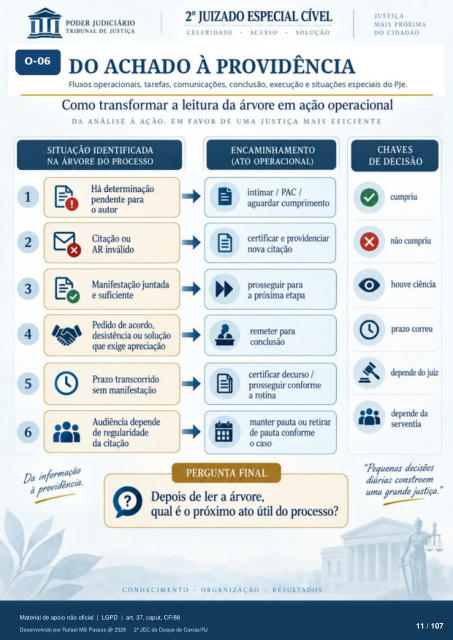

Transcrição automática em português, ainda não revisada. Confira grafia, prazos e termos jurídicos na imagem e no PDF antes de utilizar.
II
DO ACHADO À PROVIDÊNCIA
Fluxos operacionais, tarefas, comunicações. conclusão, execução e situações especiais do PJe. Como transformar a leitura da árvore em ação operacional
DA ANÁLISE À AÇÃO. EM FAVOR DE UMA JUSTIÇA MAIS EFICIENTE
1 2
3 5
SITUAÇÃO IDENTIFICADA
NA ÁRVORE DO PROCESSO
Há determinação pendente para
o autor Citação ou
AR inválido Manifestação juntada
e suficiente PKlido de acxrdo,
desistência ou solução que exige apreciação
Prazo transcorrido sem manifestação
Audiência dqmde de regularidade
da citação Da informaçiO
idência.
ENCAMINHAMENTO
(ATO OPERACIONAL)
intimar / PAC / aguardar cumprimento
certificar e providenciar nova citação
prosseguir para a próxima etapa
remeter para culclusão
decurso / pr(Kseguir conforme
a rotina manter Bilita ou retirar
de pauta conforme o caso
PERGUNTA FINAL
Depois de ler a árvore, qual é o próximo ato útil do processo?
CONHECIMENTO
ORGANIZACÀO
RESULTADOS
CHAVES
DE DECISÃO
Imve ciência prazo correu
dqmde do juiz deFnde da
serventia "Pequenas decisões
diárias constroem uma grande justiça. "
Ver também o infográfico original (página 11)
